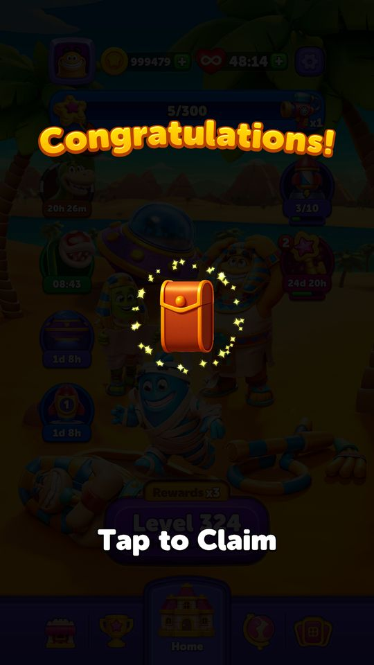

BlockOut — Ai thấy giá nào, nhận quà nào, chơi bàn nào?
Mục lục bài phân tích
- Nhận định dành cho game designer
- Ví dụ xuyên suốt: An và Bình cùng đi qua một ngày chơi
- Năm nhãn thương mại và phạm vi treatment
- Star Blaze: toàn bộ 25 mốc và hai cách trả thưởng
- Các trục quyết định: không gom thành một nhóm duy nhất
- Hai cấu hình cùng tồn tại: ví dụ quảng cáo và Play On
- Case mô tả và tiêu chí xác minh
- Đánh giá: điều nên học và điều cần đo thêm
- Nguồn và phạm vi bằng chứng
Đối chiếu 10/10/2026 · app và mã native cùng version 1006. ✅ là giá trị đã đọc hoặc ảnh thật; 🧪 là ví dụ giả định dùng bảng và luật thật. Bài này tách nhãn thương mại, tiến độ, trạng thái sự kiện, cấu hình level và quảng cáo để giải thích vì sao hai người chơi có thể thấy khác nhau.
Nhận định dành cho game designer
BlockOut có hạ tầng chia SKU theo năm nhãn, nhưng bằng chứng hiện tại chưa cho phép gọi toàn bộ game là “định giá động theo sức chi”. Dragon Treasure có năm SKU danh nghĩa 2/5/10/15/25 USD. Tuy nhiên cache ngày 10/10 ghi isEnabled=false. Một bảng giá tồn tại trong game không đồng nghĩa cả năm gói đang được bán trên tài khoản đang chạy.
Star Blaze khác MagicSort ở chỗ chưa thấy ba đường target theo payer. Cache BlockOut có hai đường: thường và có Collection. Cả hai đều cần 21.811 sao qua 25 mốc. Native chọn theo điều kiện hiển thị quà Collection. Chưa thấy nhánh NPP/DH/W trong đường này. Vì vậy không sao chép kết luận “whale cần gần gấp đôi điểm” từ MagicSort sang BlockOut.
Khác biệt đang thấy rõ nhất là nguồn cấu hình và quyền nhận quà. Star Blaze có thể trả coin hoặc pack ở cùng mốc; quảng cáo từ backend khác hẳn cấu hình Firebase; Play On trong phiên thật tăng 900 →  1.900 coin. Mỗi thứ có một nguyên nhân riêng, chưa thể gom hết thành A/B hay payer segment.
1.900 coin. Mỗi thứ có một nguyên nhân riêng, chưa thể gom hết thành A/B hay payer segment.
Một tài khoản có nhiều nhãn độc lập. Global segment là non-purchaser; level segment là default; backend ad config là type 26; backend Play On là type 1. Những giá trị này không phải bốn cách gọi cùng một nhóm.
Tóm lại: đọc nhãn hoặc cấu hình từ backend → từng tính năng kiểm gate → chọn SKU/đường thưởng/level/ad → dựng UI → người chơi thao tác → ghi kết quả. Muốn giải thích chênh lệch giữa hai tài khoản phải đối chiếu đúng lớp, đúng thời điểm và cùng version.
Ví dụ xuyên suốt: An và Bình cùng đi qua một ngày chơi
🧪 An và Bình là hai người giả định ở level 350. An có global nhãn non-purchaser; Bình whale. Cả hai dùng cùng level segment default, cùng Star Blaze event và cùng cấu hình ngày 10/10. An chưa được hiển thị quà Collection; Bình đủ điều kiện hiển thị. Trạng thái này được đặt để minh họa hai trục khác nhau, không nói rằng whale tự động được bật Collection. Ở dòng QA Dragon Treasure, giả định nhãn sự kiện khớp nhãn global của từng người; cần kiểm riêng điều này khi test thật.
| Lúc | An | Bình | Luật / nguồn số liệu |
|---|---|---|---|
| Mở Home | Đọc nhãn non-purchaser | Đọc nhãn whale | 🧪 Nhãn giả định; global cache tài khoản thật là non-purchaser |
| Tìm Dragon Treasure | Không được kết luận sẽ thấy offer | Tương tự | ✅ isEnabled=false có thể chặn cả hai dù tồn tại năm SKU |
| Nếu QA bật đúng event hợp lệ | Bảng chọn SKU block.dragontreasure2, dollarEquivalent 2 | SKU block.dragontreasure25, dollarEquivalent 25 | ✅ Có treatment trong config; đây là tình huống QA, chưa mua thật |
| Vào level 350 | Seed t214-level-350, timer 60s | Cùng seed và 60s theo giả định | ✅ Entry 350 của snapshot không chứa payer condition |
| Star Blaze mốc 2 | Quà gốc 50 coin | Pack loại 1 | ✅ Khác theo nhánh Collection, không cần khác payer |
| Star Blaze mốc 3 |  TimeFreeze x1 TimeFreeze x1 | TimeFreeze x1 | ✅ Target riêng mốc 300, tích lũy 311 cho cả hai |
| Cùng đạt 711 sao | Qua 4 mốc; mốc 4 là 50 coin | Qua 4 mốc; mốc 4 là pack loại 2 | ✅ Hai đường có cùng target, khác nội dung quà |
| Hết giờ lần 1 | Có thể mua 30 s bằng 900 coin | Cùng giá nếu dùng cùng config Play On | ✅ Đã chạy trên tài khoản thật; chưa có bằng chứng SKU thương mại làm đổi giá này |
| Hết giờ lần 2 | UI đề nghị 30 s bằng 1.900 coin | Cùng kỳ vọng nếu điều kiện giống nhau | ✅ Tăng giá theo lần Play On đã thấy, không phải do vừa đổi nhãn |
| Hết event | So sao, mốc, quà đã claim | So cùng những trường đó | 🧪 Chỉ so coin sẽ bỏ qua giá trị pack của Bình |
Điều rút ra: cùng level chưa đủ để so offer; cùng nhãn thương mại chưa đủ để so quà; cùng target chưa đủ để so tổng giá trị nhận. Cần giữ riêng các cột payer, Collection, config nguồn và số lần Play On.

*✅ Ảnh LDPlayer trong hồ sơ: x1/x5/x10/x25/x100, mốc 25 thưởng 2.000 coin, mốc 24 là  2 giờ mạng vô hạn, mốc 23 là
2 giờ mạng vô hạn, mốc 23 là  UFO x1. Đây là một đường đã được hiển thị, không phải ảnh so sánh payer và whale.*
UFO x1. Đây là một đường đã được hiển thị, không phải ảnh so sánh payer và whale.*
Năm nhãn thương mại và phạm vi treatment
| Nhãn | SKU Dragon Treasure | Dollar equivalent | Target Star Blaze theo snapshot | Trạng thái ngày 10/10 | Ví dụ |
|---|---|---|---|---|---|
| non-purchaser | block.dragontreasure2 | 2 | 21.811 ở cả hai nhánh Collection | Drill tắt | ✅ Đây là nhãn global thật trong cache tài khoản |
| poor | block.dragontreasure5 | 5 | Không có bảng riêng poor trong GAE đã đọc | Drill tắt | 🧪 Nếu feature bật, poor chọn SKU 5 |
| hamsi | block.dragontreasure10 | 10 | Không có bảng riêng hamsi | Drill tắt | 🧪 SKU 10 không chứng minh timer giảm hay sao cần tăng |
| dolphin | block.dragontreasure15 | 15 | Không có bảng riêng dolphin | Drill tắt | 🧪 So cùng feature/country trước khi so giá store |
| whale | block.dragontreasure25 | 25 | Không có bảng riêng whale | Drill tắt | 🧪 Chênh 25/2 =12,5 lần là tỷ lệ dollarEquivalent của SKU |
Năm nhãn là khóa kỹ thuật thật, không có ngưỡng phân loại kèm theo. “Poor” không phải kết luận về thu nhập cá nhân. “Whale” không đủ để khẳng định đã chi hơn một số USD tùy ý. Bộ nguồn không có lookback window, tỷ lệ traffic, mô hình dự báo hay thời gian hạ nhóm sau khi ngừng mua.
USD equivalent khác giá Google Play
Ảnh Dragon Treasure trong hồ sơ hiển thị 52.000 VND; lịch sử ghi rõ feature được ép bật local để khảo sát UI. Một ảnh IAP khác đã ghi product “Dragon Treasure 2”, giá 52.000₫ và đã hủy. Có thể dùng chúng để mô tả sản phẩm và cửa thanh toán đã thấy; không được gọi là giao dịch thành công hay offer đang bật tự nhiên ngày 10/10.

*✅ Ảnh demo thật từ hồ sơ cũ, feature được bật local trong phiên đó: Activate 52.000 VND; mốc 1/3/5/10 màn trả 50/100/150/250 coin; “Earn up to 10000 coins” là tổng tiềm năng. Cache 10/10 vẫn tắt feature. Ảnh này không chứng minh backend đang phân phát offer cho nhóm non-purchaser.*
Tác động thiết kế: một sản phẩm “mua quyền nhận thưởng rồi chơi để lấy” cần so cả giá, thời gian còn lại và số màn phải thắng. Nếu người chơi mua sát hết giờ, cùng giá và cùng tổng quà danh nghĩa vẫn có giá trị thực dụng thấp hơn. Đây là tình huống cần case riêng, không lấy 10.000 coin chia 52.000 VND làm suất hoàn trả chắc chắn.
Star Blaze: toàn bộ 25 mốc và hai cách trả thưởng
Native CalculateCurrentRewardIndex cộng các RewardScore trước khi so tổng. Vì vậy target1,10,300 nghĩa là mốc 3 ở 311 sao, không phải chỉ cần tổng 300. Bảng dưới dùng cache đang cài; một số con số đóng gói cũ như mốc 3=200 đã được remote đổi thành 300.
| Mốc | Cần thêm | Tích lũy | Quà thường | Quà khi hiển thị Collection |
|---|---|---|---|---|
| 1 | 1 | 1 | Mạng vô hạn 00:30:00 | Mạng vô hạn 00:30:00 |
| 2 | 10 | 11 | 50 coin | Pack loại 1 x1 |
| 3 | 300 | 311 | Time Freeze x1 | Time Freeze x1 |
| 4 | 400 | 711 | 50 coin | Pack loại 2 x1 |
| 5 | 250 | 961 | Mạng vô hạn 00:15:00 | Mạng vô hạn 00:15:00 |
| 6 | 750 | 1.711 | Rương: Time Freeze x1,  Rocket x1 Rocket x1 | Rương: Time Freeze x1, Rocket x1 |
| 7 | 150 | 1.861 | 100 coin | 50 coin |
| 8 | 200 | 2.061 | Rocket x1 | Pack loại 1 x1 |
| 9 | 350 | 2.411 | Mạng vô hạn 00:30:00 | Mạng vô hạn 00:30:00 |
| 10 | 650 | 3.061 | Rương: Time Freeze x1, Rocket x1 | Rương: Time Freeze x1, Rocket x1 |
| 11 | 150 | 3.211 | 100 coin | Pack loại 3 x1 |
| 12 | 300 | 3.511 | Rocket x1 | Rocket x1 |
| 13 | 650 | 4.161 | Time Freeze x1 | Pack loại 2 x1 |
| 14 | 250 | 4.411 | Mạng vô hạn 00:30:00 | Mạng vô hạn 00:30:00 |
| 15 | 1.950 | 6.361 | Rương: Rocket x1, UFO x1 | Rương: Rocket x1, UFO x1 |
| 16 | 300 | 6.661 | 200 coin | Pack loại 4 x1 |
| 17 | 600 | 7.261 | Rocket x3 | Rocket x3 |
| 18 | 200 | 7.461 | Time Freeze x1 | Pack loại 1 x1 |
| 19 | 300 | 7.761 | Mạng vô hạn 01:00:00 | Mạng vô hạn 01:00:00 |
| 20 | 3.450 | 11.211 | Rương: Time Freeze x1, Rocket x1, UFO x1 | Rương: Time Freeze x1, Rocket x1, UFO x1 |
| 21 | 300 | 11.511 | Time Freeze x1 | Pack loại 4 x1 |
| 22 | 650 | 12.161 | 400 coin | 400 coin |
| 23 | 2.300 | 14.461 | UFO x1 | Pack loại 4 x1 |
| 24 | 550 | 15.011 | Mạng vô hạn 02:00:00 | Mạng vô hạn 02:00:00 |
| 25 | 6.800 | 21.811 | 2.000 coin | 2.000 coin |
Quà cuối nặng hơn nhiều so với cảm giác của mốc đầu. Mốc 1 cần 1 sao để trả 30 phút mạng. Riêng mốc 25 cần 6.800 sao, bằng 31,2% toàn đường. Trước mốc 25 đã cần 15.011 sao; người vừa chạm mốc 24 chưa “gần xong” về lượng công sức như khoảng cách một ô trên UI gợi ra.
| Chỉ số từ bảng | Không Collection | Có Collection | Cách dùng |
|---|---|---|---|
| Tổng target | 21.811 | 21.811 | Khác quà nhưng không tăng target trong snapshot |
| Tổng coin ghi trực tiếp tại mốc | 2.900 | 2.450 | Có Collection giảm 450 coin trực tiếp, đổi sang pack và một số quà khác |
| Grand prize | 2.000 coin | 2.000 coin | Cùng phần thưởng cuối |
| Mốc có pack trực tiếp | 0 | 9 | Pack ở 2/4/8/11/13/16/18/21/23 |
| Mốc có rương | 4 | 4 | Phải đọc rewards trong rương để không bỏ sót booster |
Tổng coin trên không quy đổi mạng vô hạn, pack và booster sang coin, không khẳng định tổng giá trị nhánh Collection thấp hơn. Giá trị pack còn phụ thuộc bộ sưu tập, thẻ mới/trùng và khả năng hoàn thành album; cần dữ liệu khác để định giá.
Mô hình cụ thể: 40 lượt thắng sẽ tới đâu?
🧪 Bắt đầu 0 sao/x1, chỉ xét thắng hợp lệ một đơn vị cơ sở, không thua và không có nhân độ khó khác. Năm lần đầu cộng 1+5+10+25+100=141. Từ lần thứ 4 trở đi tổng là 100 × n − 359. Sau 40 lượt có 3.641 sao: qua mốc 12 ở 3.511, còn thiếu 520 tới mốc 13 ở 4.161. Cả hai nhánh Collection đều tới cùng mốc 12.
Trong mô hình này cần 222 lượt thắng liên tiếp để vượt 21.811. Không dùng 222 làm dự báo retention hoặc độ dài event: game có điều kiện tính điểm, các loại màn và sự cố đứt chuỗi. Ví dụ chỉ cô lập hệ số và target để designer nhìn thấy sự khác nhau giữa đoạn đầu và đoạn cuối.


*✅ Ảnh hồ sơ cũ cho thấy pack bật ra, thanh phía sau 5/300 ở Home level 324. UI minh họa sự thay quà theo Collection. Không dùng ảnh này để xác nhận một ngưỡng chi tiêu hoặc xác nhận đã chạy trọn 25 mốc.*
Các trục quyết định: không gom thành một nhóm duy nhất
| Trục | Giá trị thật / nguồn | Điều có thể tác động | Ví dụ cụ thể |
|---|---|---|---|
| Nhãn thương mại global | SegmentDataModelV2 = non-purchaser | Đầu vào cho những dịch vụ cần segment | ✅ Coin trước phiên 996.979 nhưng nhãn vẫn non-purchaser; tài nguyên đã chỉnh từ trước |
| Nhãn level | userLevelSegment = default | Backend trả tập level theo cấu hình | ✅ ConfigName 15-09-26-regular-colorgrinder-v214-v2 |
| Bàn và thời gian | Level 350: t214-level-350, duration 60 | Seed/timer định nghĩa thử thách trước thao tác | ✅ Timer 01:00 đã hiện khi vào màn |
| Kết quả lượt chơi | Retry 2→3 sau fail; levelProgress vẫn 350 | Tiến độ, chuỗi, số lần thử được lưu | ✅ Một lần thua không chứng minh timer lượt sau tự giảm hoặc tăng |
| Tiến độ mở tính năng | GAE 29, BlockPass 50, Collection 95, Drill 110 | Đủ điều kiện xét feature | 🧪 Người level 94/95 có thể khác quyền Collection dù cùng payer |
| Nhánh quà Collection | ShouldShowCollectionRewards | Chọn RewardSteps hoặc RewardStepsWithCollection | ✅ Cùng 311 sao, quà mốc 3 vẫn Time Freeze; ở mốc 2 thì coin/pack khác |
| Quảng cáo backend | configType 26, cache inter từ 70, life rewarded từ 50 | Điều kiện và vị trí quảng cáo | ✅ Firebase tắt SDK/inter nhưng cache backend lại bật |
| Cứu màn backend | configType 1; 30 s mỗi lần; 900/1900/2900 | Giá theo lần Play On | ✅ Hai bậc đầu đã thấy thực tế; chưa mua bậc 2 hoặc thấy bậc 3 |
Độ khó có nhãn riêng, nhưng chưa có bằng chứng DLB theo số thua
Tập regular có 999 entry, 801 thường/99 Hard/99 SuperHard. Tập Arena có 10 màn ban đầu và 850 màn vòng lặp. Đây là quy mô và nhãn nội dung, không phải tỷ lệ người chơi được chia vào nhóm. Level 350 là regular, 60 giây; thử lần này dùng Rocket, UFO và Freeze làm bàn dễ xử lý hơn theo thao tác người chơi.
Cache level hiện tại không có danh sách dlbSeeds và dlbCap giống MagicSort. Có field userLevelSegment chứng minh giao thức có nhãn level; chỉ một giá trị default không cho biết backend dùng lịch sử chi tiêu hay kỹ năng để gán nhãn. Chưa có cặp tài khoản cùng level 350 nhưng khác segment level để kết luận phân nhóm gây thay timer hoặc layout.
Cách kiểm đúng: giữ version/configName/level/seed/booster trước màn giống nhau, so retry và response level giữa hai lượt. Nếu backend trả seed mới thì lưu hash layout và timer; sau đó kiểm cơ chế lựa chọn. Một ảnh thua sau 30 giây bổ sung chưa chứng minh DLB.
Hai cấu hình cùng tồn tại: ví dụ quảng cáo và Play On
| Nội dung | Firebase CachedRemoteConfigs | Cache backend được đọc | Bằng chứng UI |
|---|---|---|---|
| Interstitial | isInterEnabled=false; mốc 10 | true; mốc 70; cooldown 240 s | Phiên này chưa có case đo tần suất inter đầy đủ |
| Life rewarded | false; mốc 10 | true; mốc 50 | Có cờ và gate, chưa đo completion callback trong case này |
| Rewarded Play On | false | false | Out of Time đang đề nghị coin |
| Play On hai bậc đầu | Hai bậc đầu 900/900 trong playOnConfigModel | 900/1900 | ✅ UI lần 1 là 900; lần 2 là 1900 |
Nhận định: nếu chỉ đọc Firebase thì có thể viết sai rằng game tắt quảng cáo hoặc lần cứu thứ hai vẫn 900. Backend ghi đè là cơ chế phân phối cấu hình đã có bằng chứng; chưa có experimentID hoặc phân bổ variant để xác định thử nghiệm A/B cụ thể. Hai mức 900/1900 là tiến độ trong một lượt, chưa phải bằng chứng tài khoản vừa đổi nhãn payer.
 1900 coin cho 30 giây
1900 coin cho 30 giây*✅ Ảnh 10/10: sau khi đã mua 900 coin và dùng hết 30 giây, UI đề nghị lần 2 với 1.900 coin. Chỉ quan sát, chưa mua bậc 2. Giá coin này là chi phí cứu màn, không phải giá SKU Dragon Treasure bằng USD/VND.*
Case mô tả và tiêu chí xác minh
BO-S01 — Global segment và level segment là hai trường
- Tiền điều kiện: snapshot trước test, levelProgress 350, global non-purchaser, level default.
- Hành động: so hai nguồn cache rồi ghi seed và timer của lượt vào level 350.
- Kết quả: ✅ hai nhãn cùng tồn tại; level chọn
t214-level-350, timer 60s. - Ví dụ: default không có nghĩa “người chưa trả tiền”; đó là tên nhóm level trong response.
- Nguồn / trạng thái: summary, GrandCachedRemoteLevelConfigs, BO-T06; đã đọc và đã chạy UI.
BO-S02 — Kho tài nguyên không xác định nhãn thương mại
- Tiền điều kiện: ✅ inventory 996.979 coin, booster hàng trăm/hàng nghìn, nhãn non-purchaser.
- Hành động: đọc đồng thời segment và inventory trước/sau phiên.
- Kết quả có thể xác minh: tài nguyên đã chỉnh trong lịch sử; chưa có bằng chứng số dư lớn làm đổi segment.
- Ví dụ: account có thể trả 900 coin trong màn dù chưa có giao dịch tiền thật trong phiên.
- Nguồn / trạng thái: before/after summary, BO-T14; đã đối chiếu. Không dùng để ước lượng thời gian cạn coin tự nhiên.
BO-S03 — Có năm SKU nhưng feature tắt
- Tiền điều kiện: ✅ cache Drill isEnabled=false, firstLevelToShow 110; account 350.
- Hành động: kiểm cờ trước khi tìm offer ở Home.
- Kỳ vọng từ config: qua mốc 110 không đủ để tuyên bố Dragon Treasure phải xuất hiện.
- Ví dụ: 🧪 account whale level 350 vẫn phải qua gate bật feature, không được đảm bảo thấy SKU 25.
- Nguồn / trạng thái: treasureDrillConfigModel; đã đọc config, không ép bật lại trong phiên này.
BO-S04 — So treatment non-purchaser và whale
- Tiền điều kiện: 🧪 event QA hợp lệ được bật, account có nhãn tương ứng và store trả metadata.
- Hành động: ghi SKU được chọn, nội dung quà, thời gian còn lại và giá hiển thị.
- Kỳ vọng từ config: SKU 2 và SKU 25; dollarEquivalent 2 và 25. Không tự quy ra 52.000 và 650.000 VND.
- Ví dụ: tỷ lệ 12,5 lần chỉ đúng với trường danh nghĩa; chưa phải giá store hoặc tổng giá trị offer đã đo.
- Nguồn / trạng thái: segmentedIAPModel; chưa chạy hai account, không có receipt thành công.
BO-S05 — Collection đổi quà, target giữ nguyên
- Tiền điều kiện: 🧪 cùng event, điểm 10 trước mốc tích lũy 11; hai trạng thái Collection.
- Hành động: kiếm ít nhất 1 sao rồi đọc quà mốc 2.
- Kỳ vọng: nhánh thường 50 coin; nhánh Collection pack loại 1; cả hai đều vượt ngưỡng 11.
- Ví dụ: An nhận coin, Bình nhận pack không đòi hỏi phải khác nhau về nhãn payer.
- Nguồn / trạng thái: GaeService.GetRewardSteps và hai bảng config; có ảnh pack trong hồ sơ cũ, chưa chạy cặp đối chứng10/10.
BO-S06 — Target riêng mốc khác target tích lũy
- Tiền điều kiện: 🧪 tổng 310 sao, đã hoàn thành hai mốc đầu.
- Hành động: kiếm 1 sao để đạt 311.
- Kỳ vọng: ở 310 chưa xong mốc 3; ở 311 vừa xong và nhận Time Freeze x1 ở cả hai nhánh.
- Ví dụ: nếu QA đặt mốc 3 tại 300 thì tiêu chí test sai, chưa phải game lỗi.
- Nguồn / trạng thái: CalculateCurrentRewardIndex, RewardSteps; đã tính toán, chưa chạy tại ranh giới311.
BO-S07 — Grand prize cần 6.800 sao sau mốc 24
- Tiền điều kiện: 🧪 đã đạt 15.011 sao, hoàn thành mốc 24, còn event hợp lệ.
- Hành động: tiếp tục chơi và ghi tiến độ cuối cùng.
- Kỳ vọng: cần thêm 6.800 để đến 21.811 mới đủ mốc 25; không nhận ngay 2.000 coin chỉ vì còn một mốc.
- Ví dụ: ở x100, riêng mốc cuối vẫn cần 68 lần cộng 100 điểm. Đây là số học, không dự báo số màn thực tế.
- Nguồn / trạng thái: RewardSteps[24]; chưa chạy đến hết đường.
BO-S08 — Chuỗi thắng tạo tốc độ, không tạo nhãn payer
- Tiền điều kiện: 🧪 GAE bắt đầu 0 điểm/index 0, mỗi win đủ điều kiện một đơn vị cơ sở.
- Hành động: theo dõi năm win liên tục.
- Kỳ vọng từ native/config: điểm 1→6→16→41→141; index chạm tầng x100 và bị giới hạn ở tầng cuối.
- Ví dụ: tiến nhanh tới target không chứng minh backend vừa gán người chơi vào nhãn chi tiêu cao.
- Nguồn / trạng thái: IncreaseScoreAndStreakMultiplier, StreakMultipliers; có ảnh chuỗi trong hồ sơ, chưa chạy lại chuỗi năm win từ 0 ngày 10/10.
BO-S09 — Default đóng gói khác remote hiện tại
- Tiền điều kiện: default GAE có mốc 3=200, mốc 4=300; remote 10/10 là 300/400.
- Hành động: kiểm nguồn config trước khi viết bảng target; nếu QA offline cần ghi rõ cache đang có hay không.
- Kết quả có thể xác minh: hai bảng thực sự khác nhau; không trộn target 200 cũ với phần thưởng 50 coin mới ở mốc 4.
- Ví dụ: ngưỡng mốc 3 của remote là 311, không phải 211 của bộ default.
- Nguồn / trạng thái: defaultconfigs/GaeConfigModel.json và CachedRemoteConfigs; đã đối chiếu file, không reset cache game.
BO-S10 — Play On lần 1 và lần 2
- Tiền điều kiện: ✅ level 350 hết 60 s; số dư 997.079 coin sau khi claim race.
- Hành động: mua Add Time 900 coin, đợi hết 30 s để xem lần hai.
- Kết quả: 997.079→996.179; UI lần hai là 1.900 coin. Chưa mua 1.900.
- Ví dụ: tăng giá theo bậc Play On trong config; case này chưa đo thấy việc đổi segment.
- Nguồn / trạng thái: BO-T13/T14/T16; đã chạy và đối chiếu cache backend.
BO-S11 — Quit dẫn tới upsell Block Pass
- Tiền điều kiện: ✅ đã hết giờ lần hai, UI Play On 1.900.
- Hành động: đóng Out of Time.
- Kết quả: Continue? cảnh báo mất mạng, Play On 1.900 và Activate Block Pass; không activate.
- Ví dụ: người chơi nhận đề nghị Pass ở điểm thất bại; đây là entrypoint bán hàng, chưa chứng minh giá Pass đổi theo payer.
- Nguồn / trạng thái: BO-T17; đã chạy. Chưa kiểm nhánh tài khoản đã có Pass.
BO-S12 — Thua một lần chưa đủ chứng minh DLB
- Tiền điều kiện: ✅ retryCount 2 trước phiên, level 350.
- Hành động: từ chối tiếp tục, về Home, đọc save.
- Kết quả: retry 2→3, levelProgress vẫn 350, còn
 4 life; chưa đo chuỗi nhiều lượt chọn seed.
4 life; chưa đo chuỗi nhiều lượt chọn seed. - Ví dụ: không viết “thua ba lần thì tự đổi sang bàn dễ” khi bộ level này chưa có cap như MagicSort.
- Nguồn / trạng thái: BO-T18 và cache level; đã chạy fail/save, nhánh đổi seed chưa xác minh.
BO-S13 — Firebase tắt quảng cáo nhưng backend bật
- Tiền điều kiện: ✅ ad backend isEnabled=true/configType 26; GrandCachedAdConfig bật inter từ 70.
- Hành động: đọc cả hai nguồn và theo dõi điều kiện quảng cáo/SDK ở level hợp lệ.
- Kỳ vọng từ config: không lấy adConfigModel=false để kết luận game không có quảng cáo.
- Ví dụ: 🧪 level 69/70 cùng account là case ranh giới; phải kiểm cooldown 240 s, trạng thái mạng và NoAds.
- Nguồn / trạng thái: CachedRemoteConfigs, GrandCachedAdConfig; đã đọc config, chưa đo fill rate hoặc tần suất runtime.
BO-S14 — Mua lần đầu và refresh segment
- Tiền điều kiện: cần receipt thử hợp lệ; global segment non-purchaser; ghi riêng nhãn event và level.
- Hành động: mua thành công, đọc lại sau sync, sau khởi động và khi nhận event mới.
- Kỳ vọng cần đo: global đổi khi nào; event/level có đổi theo không; giá và tiến độ cũ có được giữ nguyên không.
- Ví dụ: 🧪 không gọi An là poor ngay sau mua gói đầu tiên nếu chưa thấy response gán nhãn.
- Nguồn / trạng thái: SegmentService/SegmentDataService/TrySyncAllData; chưa chạy, không có receipt thành công.
Đánh giá: điều nên học và điều cần đo thêm
Điểm mạnh: tách payer khỏi level và Collection cho phép live-ops thay reward mà không phải tạo UI mới. Ví dụ Star Blaze giữ 21.811 target nhưng đổi chín mốc thành pack. Quà rương kết hợp booster duy trì liên hệ với core game.
Điểm khó vận hành: nhiều nguồn cấu hình dễ làm QA đọc nhầm lớp. Báo cáo ghi quảng cáo tắt khi backend cache bật, hoặc ghi lần cứu thứ hai giá 900 khi UI là 1.900, sẽ dẫn đến kết luận sai. Nên lưu “cấu hình được dùng cuối cùng” cùng lý do chọn nguồn ở mỗi session.
Đề xuất đo: so mức hoàn thành Star Blaze theo nhánh Collection và kỹ năng, tách riêng khỏi payer. Ghi lượng điểm tới mốc 24 và lượng điểm kiếm trong mốc 25 để xem đoạn cuối có quá dài. So tỷ lệ chấp nhận Play On ở 900/1900/2900 với coin balance và quyền Pass. Với Dragon Treasure, chỉ tính cơ hội mua khi feature thực sự bật và đủ điều kiện; danh mục SKU không phải số lần người chơi thấy offer.
Giống RoyalMatch, bài dùng walkthrough, định lượng và case có ranh giới cụ thể. Tuy nhiên bằng chứng BlockOut chưa có 52 bài A/B, nhóm SLB hoặc bảng target theo payer như ở các game đối chiếu. Kết luận về mức độ phân khúc phải dựa trên đúng phần đã đọc và đo được.
Nguồn và phạm vi bằng chứng
- Cache10/10:
facts/runtime/test_20261010/before/CachedRemoteConfigs,GrandCachedRemoteLevelConfigs,GrandCachedAdConfig,GrandCachedPlayOnConfig,summary.json; after summary cho chênh lệch coin và retry. Chỉ dùng các trường game cần thiết trong báo cáo. - Đóng gói 1006:
Resources/defaultconfigs/GaeConfigModel.json; dùng để chỉ ra thay đổi của remote. Mọi bảng chính ở trên lấy cache đang chạy. - Native 1006:
GaeService.GetRewardSteps,CalculateCurrentRewardIndex,IncreaseScoreAndStreakMultiplier;SegmentService;TreasureDrillService.GetSegmentedIAPConfigModel. Chữ ký từ dummy C# chỉ làm đường dẫn tra cứu, không coi thân rỗng là logic thật. - Ảnh:
screens/web/screens.json→ GAE02/06, TreasureDrill02; Dragon Treasure cũ được đánh dấu bật local.test_results.jsonvà BO-29 thuộc case10/10. Ảnh minh họa đã được xem lại, không phải mockup. - Chưa có: quy tắc backend gán nhãn và ngưỡng chi tiêu, traffic A/B, thời gian cập nhật nhãn sau IAP, cặp tài khoản khác segment, receipt mua thành công và tỷ lệ uplift. Case thiếu dữ liệu được ghi rõ chưa chạy.
Đọc kèm Level và độ khó, Economy, Sale và IAP, QA kèm ảnh, GAE, Segmentation.